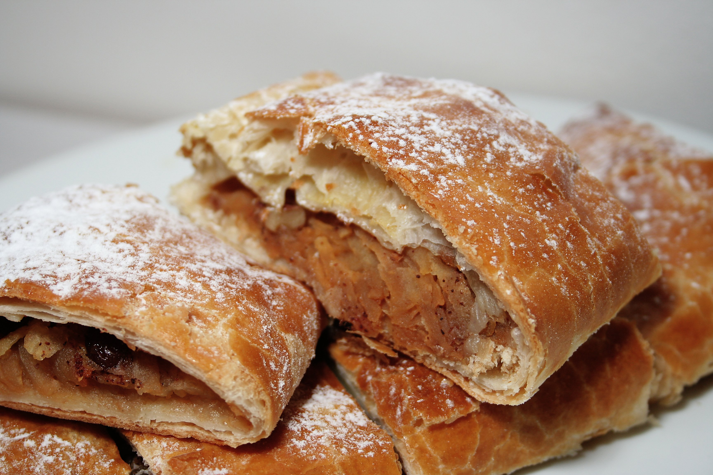

Viennese Apfelstrudel

What is Viennese Apfelstrudel?
Viennese Apfelstrudel, or apple strudel, is a classic Austrian pastry that features a thin, flaky dough filled with a
delicious spiced apple filling.
Ingredients
- 2 cups all-purpose flour
- 1/4 cup vegetable oil
- 1/2 teaspoon salt
- 3/4 cup warm water
- 4-5 large apples (peeled, cored, and thinly sliced)
- 1 cup breadcrumbs
- 1 cup granulated sugar
- 1 teaspoon ground cinnamon
- 1/2 cup raisins (optional)
- 1/2 cup melted butter
- 1/4 cup melted butter (for brushing the top)
- Powdered sugar (for dusting the top)
Instructions
- Prepare the Dough:: In a large bowl, combine the flour, salt, oil, and warm water. Mix until a dough forms.
Knead the dough on a floured surface until it becomes smooth and elastic. Cover the dough and let it rest for
about 30 minutes.
- Prepare the Filling: In a bowl, mix the sliced apples, breadcrumbs, sugar, cinnamon, and raisins (if using). Set
aside.
- Roll out the Dough: Preheat your oven to 375°F (190°C). Roll out the rested dough on a floured surface into a
thin sheet. It should be large enough to cover a baking sheet.
- Assemble the Strudel: Brush the rolled-out dough with melted butter, leaving about an inch border around the
edges. Spread the apple filling evenly over the buttered area.
- Roll the Strudel: Starting from one edge, carefully roll the dough with the filling into a log. Place the
strudel, seam side down, on a parchment-lined baking sheet.
- Brush and Bake: Brush the top of the strudel with melted butter. Bake in the preheated oven for about 30-40
minutes or until the strudel is golden brown and the apples are tender.
- Cool and Serve: Allow the strudel to cool for a bit before slicing. Dust the top with powdered sugar before
serving.
- Optional: Serve the Apfelstrudel with a dollop of whipped cream or a scoop of vanilla ice cream for a delightful
treat.